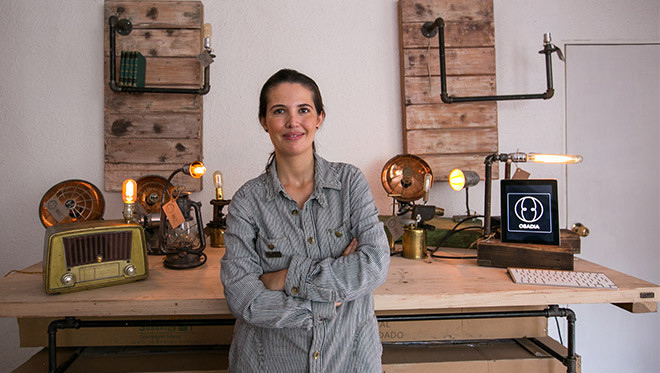

Sulca
Edmundo Sulca utiliza tecnología en desuso para crear artefactos contra todo tipo de males.

Nails
Jorge Mejía hace posible acoplar lentes analógicos con cámaras digitales.

Edwina
"Siento que el tener poder creativo y el darle poder creativo a la gente hace que la innovación en verdad suceda".

Bárbara
Bárbara Icaza usa materiales de desecho para crear nueva artesanía.

Machina
Antonio crea prendas de vestir funcionales con tecnología integrada.

Juan Pablo
Juan Pablo Villegas explora la cultura de los fixers.

Annie
Anni Garza crea instalaciones de video que interactúan con las ondas cerebrales.

Amor
Amor Muñóz facilita herramientas tecnológicas a comunidades de artesanos para crear identidad.

Gil
Gilberto Esparza utiliza desechos industriales para intervenir el espacio público.

Iván
"Ese gusto por la invención, esa seriedad con que nos tomamos la innovación, no es un tema de ahora en México, hay una raíz allí plantada".

Marcela
Marcela Armas explora la deconstrucción de materiales para crear mecanismos.

Shimizu
Roberto Shimizu crea comunidad y ayuda a preservar la cultura maker local.

Hidroponia
Antonio González transforma azoteas en sistemas de cultivo hidropónico.

Panóptica
"El hacer es una actitud de vida, es una actitud de creación".
Casa del agua
Bosco Quinzaños capta agua de lluvia para consumo humano.